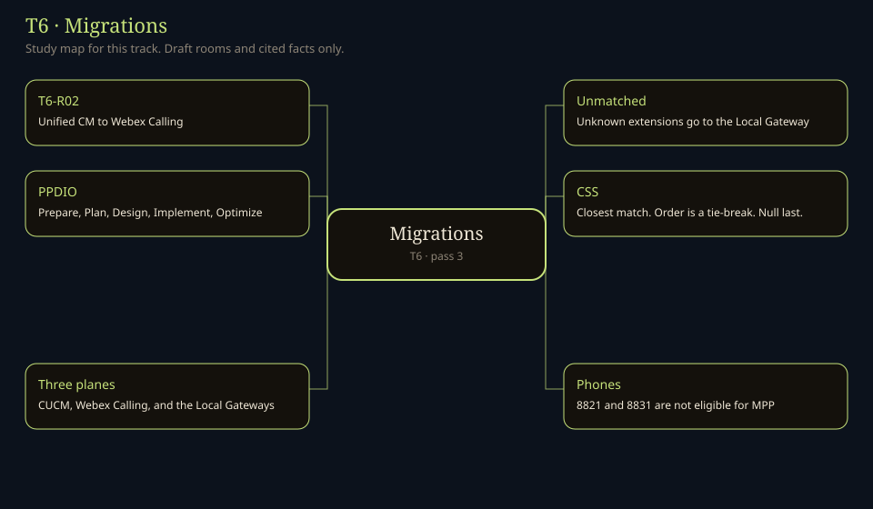

0 rooms on this track · 0 Canon rooms
Home / T6

No title in this track matches.
| Code | Room | Status |
|---|---|---|
| T6-R01 | 2,000-seat CUCM + UCCE Cutover Canon planning: phases, risks, and a one-number cutover. Not a Cisco runbook. | written |
| T6-R02 | CUCM to Webex Calling PPDIO path from Unified CM to multi-tenant Webex Calling. | written |
| T6-R03 | Migration Tools Cisco-provided migration tooling — names still to verify. | written |
| T6-R04 | UCCE/PCCE to WxCC Cited migration tools, and a crosswalk that stays marked where Cisco has no map. | written |
| T6-R05 | Third-party PBX & CC to Webex Avaya, Genesys, and other mappings. | written |
| T6-R06 | Number Porting & Cutover Cutover runbook. | written |
| T6-R07 | Coexistence & Interop Staged migration design. | written |
| T6-R08 | Post-migration Validation Test plans. | written |